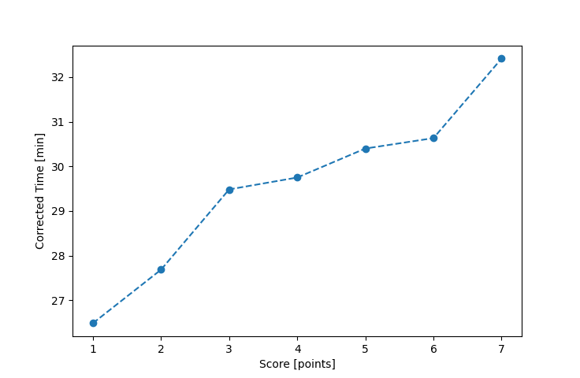

| Wind: | 2-3 (BFT) |
|---|---|
| RC: | Nick_H, Lewis_V |
| Date: | June 13, 2021 |
| Notes: | M2 Port Rounding |
| Rank / Score | Name | Boat | Input Time [mm:ss] | Input Offset [mm:ss] | Race Time [mm:ss] | Race Time [s] | Handicap | Corrected Time [s] | Corrected Time [mm:ss] |
|---|---|---|---|---|---|---|---|---|---|
| 1.0 | Mike_F | SF | 31:55 | 00:00 | 31:55 | 1915 | 1.00400 | 1907 | 31:47 |
| 2.0 | Rod_H | LASEM | 31:01 | 00:00 | 31:01 | 1861 | 0.97300 | 1913 | 31:53 |
| 3.0 | Nedra_F | SF | 33:20 | 00:00 | 33:20 | 2000 | 1.00400 | 1992 | 33:12 |
| 4.0 | Ian_O | SF | 33:59 | 00:00 | 33:59 | 2039 | 1.00400 | 2031 | 33:51 |
| 5.0 | David_Bu | SF | 34:11 | 00:00 | 34:11 | 2051 | 1.00400 | 2043 | 34:03 |
| 6.0 | Bill_P | SF | 34:57 | 00:00 | 34:57 | 2097 | 1.00400 | 2089 | 34:49 |

Application Notes:
All race results are unofficial
View source code at https://github.com/cessnao3/portsmouthracecalc/